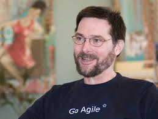

James Coplien

James Coplien est le fondateur du "Pasteur Organizational Patterns project".
Ce projet fut l’origine de l’étude de Borland QuatroPro pour Windows qui a inspiré Jeff Sutherland à rajouter le stand up meetings dans Scrum.
Le projet fut aussi l’une des origines des principes organisationnels de l’Extreme programming. Il est l’auteur de « Organizational patterns of Agile Software Development » et «Lean Architecture for Agile Software Development».
- Dates 2012 : 14-15 novembre
- Type : Inter-entreprise
- Prix : 1500€ HT